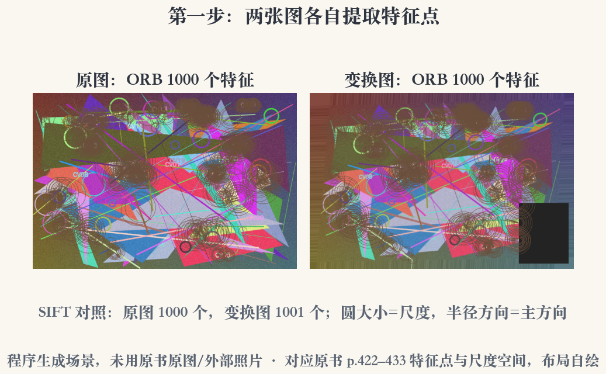
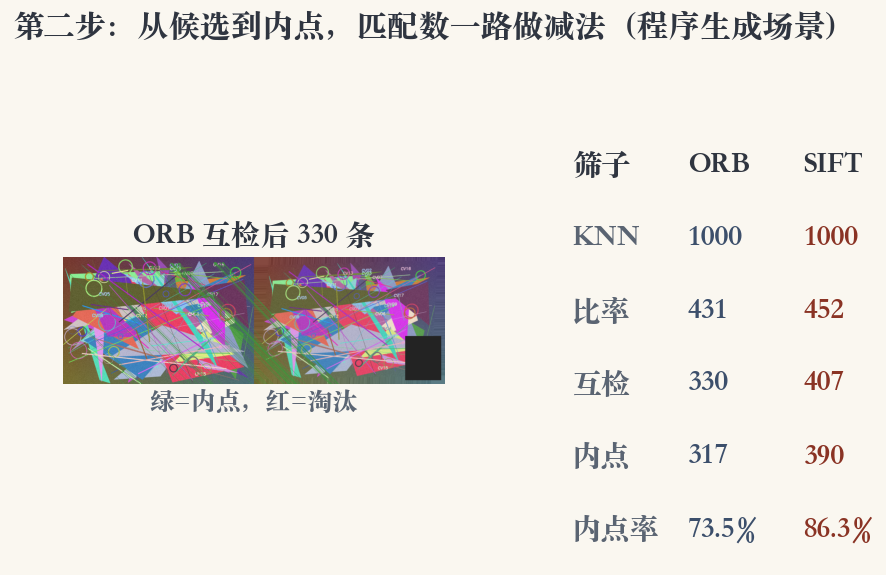
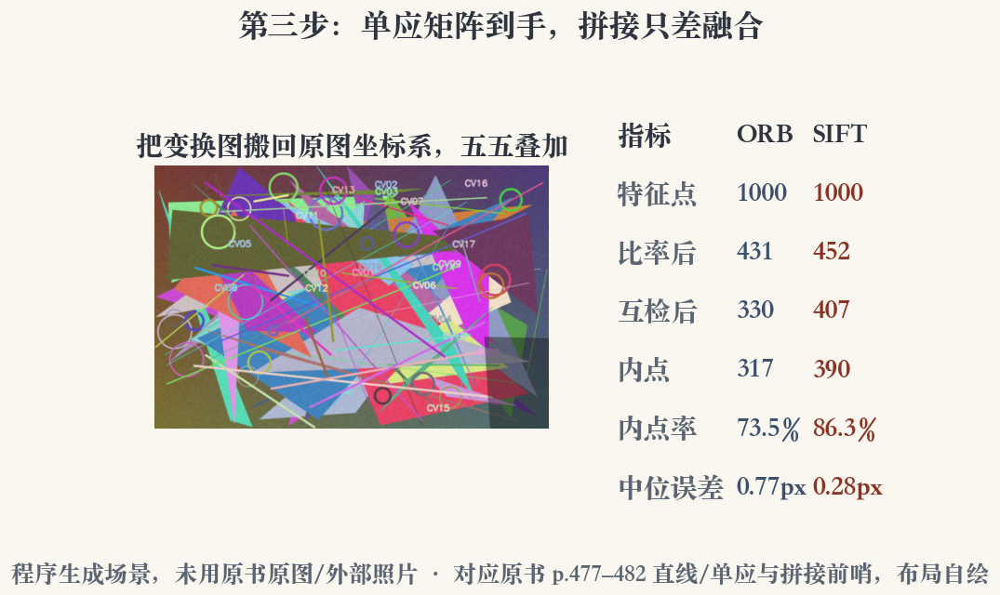

第 7 章 · 上机
六步流水线：把名字变成代码
第 7 章讲特征检测与匹配。
本集把它们串成一条能跑的流水线。
读图、提点、配对、筛匹配、估单应、叠图。
每一环都能单独换。
依据：原书第 417 页；本集实验
六步
读图：转灰度
提点：ORB / SIFT
配对：KNN 两个候选
筛选：比率、互检、RANSAC
正课第六十四集
01 / 16
上机 · 环境
先过环境：版本对，数字才对
运行环境：Python 3.11、OpenCV 4.13、NumPy 2.3。
SIFT 和 ORB 都能用，随机种子能固定。
版本不对，后面的数字就对不上。
跑之前先确认 cv2 能导入。
依据：本集实验
先记三件事
Python 3.11
OpenCV 4.13
NumPy 2.3
正课第六十四集
02 / 16
上机 · 读图
读图：先转灰度，再提特征
两张图都是 960×640，程序生成，单应已知。
先转灰度，ORB 和 SIFT 都在灰度图上找特征。
灰度图只有一层通道，画图时再转回彩色。
像素坐标系从头到尾保持同一尺度。
依据：本集实验
读图要点
尺寸：960×640
单应：已知
dtype：八位无符号
灰度：先排除颜色干扰
正课第六十四集
03 / 16
上机 · ORB
ORB：二进制、带方向
ORB 给 FAST 角点加上方向。
描述子是带方向的 BRIEF，32 字节。
上限设 1000，两张图各提 1000 个点。
32 字节就是 256 位。
依据：原书第 438 页；本集实验
ORB 的参数
检测子：FAST
方向：灰度质心
尺度：图像金字塔
描述子：32 字节
正课第六十四集
04 / 16
实验一 · SIFT 对照
SIFT：浮点、128 维
同样设 1000 上限，原图提 1000 个。
变换图提 1001 个，多的一个在边缘。
圆的大小是尺度，半径方向是主方向。
128 维浮点，存储和比较都更重。
依据：原书第 436 页；本集实验

两图 ORB 特征点与 SIFT 计数对照：圆大小=尺度，半径=主方向｜程序生成，未用教材或论文原图
正课第六十四集
05 / 16
上机 · KNN 候选
配对：每个点留两个候选
匹配第一步是选距离：ORB 用 Hamming。
SIFT 用欧氏距离。
两张图各 1000 个描述子。
KNN 给每个点留两个候选。
依据：原书第 441–443 页；本集实验
为什么留两个
最近的不一定是真匹配
第二近的当参照物
crossCheck 先关掉
k 等于二，才有次近邻
正课第六十四集
06 / 16
上机 · 比率测试
第一刀：比值不够就扔
最近邻距离除以次近邻距离。
比值小于 0.75 才留下。
ORB 剩 431 条，SIFT 剩 452 条。
阈值是超参数，不是定理。
依据：原书第 444 页；本集实验
d₁ / d₂ < 0.75
d₁：最近邻距离；d₂：次近邻距离；比值不够小就扔掉
正课第六十四集
07 / 16
上机 · 互检
第二刀：必须双向指认
A 到 B 和 B 到 A 的最近邻要互相指认。
互检后 ORB 剩 330 条，SIFT 剩 407 条。
比率管像不像，互检管是不是唯一。
会误杀真匹配，但假匹配掉得更多。
依据：原书第 445 页；本集实验
互检的代价
反向 KNN 再跑一遍
计算量翻倍
RANSAC 会轻松很多
双向都认，才算稳定
正课第六十四集
08 / 16
实验二 · RANSAC
第三刀：几何上说得通
单应阈值 3 像素。
ORB 从 330 条里留 317 个内点。
SIFT 从 407 条里留 390 个。
绿线是内点，红线是淘汰。
依据：原书第 447–448 页；本集实验

ORB 互检匹配与四道筛子：绿线=内点，红线=淘汰｜程序生成，未用教材或论文原图
正课第六十四集
09 / 16
上机 · 误差与内点率
看两个数：误差、内点率
ORB 中位重投影误差 0.77 像素。
SIFT 中位重投影误差 0.28 像素。
ORB 内点率 73.5%，SIFT 86.3%。
中位数比平均值更抗离群。
依据：本集实验
怎么读
误差单位是像素
内点率高不等于匹配多
绝对数和比例一起看
换一张图，数字会变
正课第六十四集
10 / 16
实验三 · 对齐叠加
前哨：把第二张搬回来
用单应把第二张图搬回第一张的坐标系。
五五叠加，看对齐得准不准。
右表列出特征点、比率后、互检后、内点。
拼接还要处理曝光、接缝和融合。
依据：本集实验

单应逆变换搬回原图并五五叠加，右表为两法指标｜程序生成，未用教材或论文原图
正课第六十四集
11 / 16
上机 · 速度与精度
两组数：谁快，谁准
本机单次运行，ORB 检测耗时更短。
两者匹配耗时都在毫秒级。
SIFT 在这组图上内点更多、误差更小。
ORB 描述子更短、检测更快。
依据：本集实验
别急着宣布谁赢
这组图是平面场景
纹理足、重叠大
换图排序可能反过来
单次耗时不能当基准
正课第六十四集
12 / 16
上机 · 三类翻车
最怕三件事：重复、遮挡、非平面
重复纹理：一排一样的窗户会错配。
重叠太小或遮挡太多，内点不够。
场景不是平面，前后景会错位。
本集故意加了右下遮挡和亮度变化。
依据：本集实验
怎么兜底
低纹理先加纹理
或换检测子
放宽比率、增加迭代
再逐步收紧
正课第六十四集
13 / 16
上机 · 复现清单
复现：先固定，再改一项
四道筛子：匹配策略、比率、互检、RANSAC。
本集参数：1000、0.75、3 像素。
复现时先固定这三项，再改一项。
内点和外点画图时分开颜色。
依据：原书第 441–448 页；本集实验
打印每步数量
特征数
比率后
互检后
内点数
正课第六十四集
14 / 16
上机 · 六集回指
串起来：一条链，不是六个名词
角点、尺度空间、128 维描述子。
匹配、直线、学习型描述子。
本集没有新算法，只是把旧名字接起来。
一条链比六个缩写更有用。
依据：第 7 章前六集已讲页段
这条链
角点：在哪
尺度：多大
描述子：长什么样
匹配与几何：对不对
正课第六十四集
15 / 16
上机 · 小结与移交
收束：带着基线进下一章
基线：1000 个特征、400 多条比率匹配。
内点 300 多个，重投影误差在亚像素级。
下一集复盘第 6、7 章。
再往后进入第 8 章对齐与拼接。
依据：本集实验；下一集预告
保存基线
特征上限：1000
比率：0.75
RANSAC：3 像素
正课第六十四集
16 / 16